1. 矩阵¶
迹
迹就是方阵主对角线之和，\(\text{tr}(A)\)
- 线性：\(\text{tr}(A+B) = \text{tr}(A) + \text{tr}(B)\)
- 循环置换不变：\(\text{tr}(ABC) = \text{tr}(BCA) = \text{tr}(CAB)\)
- \(\text{tr}(A) = \sum_{i=1}^n \lambda_i\)
奇异矩阵
奇异矩阵指不可逆矩阵，是“降维”线性变换
低秩分解
- 将原矩阵奇异值分解为 \(U\Sigma V^T\)，其中 \(U\) 是左奇异交矩（ \(AA^T的特征向量\) ）阵，\(V\) 是右奇异交矩阵（ \(A^TA的特征向量\) ），\(\Sigma\) 是对角矩阵，对角线上是奇异值。
- 取前 \(k\) 个奇异值和对应的奇异向量，构造新的矩阵 \(U_k\Sigma_k V^T\)
- 用新的矩阵 \(U_k\Sigma_k V^T\) 替换原矩阵，得到低秩分解
2. 概率论¶
中心极限定理：大量独立同分布随机变量的和（或平均值），无论原始分布是什么，在样本数量足够大时，其分布会趋近于高斯分布。
2.1 高斯分布¶
- \(\mu\) 是均值
- \(\sigma\) 是标准差
- \(\Sigma\) 是协方差矩阵
- 协方差矩阵的迹是总方差
- 协方差矩阵是奇异矩阵时需要对PDF进行降维
计算协方差阵
- 计算均值 \(\mu = (\bar{x}_1, \bar{x}_2, \ldots, \bar{x}_n)\)
-
中心化：每一个向量减去均值 \(\mu\)
\[ \mathbf{X}_{cent} = \mathbf{X} - \mathbf{\mu} \] -
计算协方差阵：
\[ \Sigma = \frac{1}{n-1}\mathbf{X}_{cent}^T\mathbf{X}_{cent}：无偏估计 \]\[ \Sigma_{MLE} = \frac{1}{n}\mathbf{X}_{cent}^T\mathbf{X}_{cent}:最大似然估计 \]
2.2 信息熵¶
2.2.1 香农熵¶
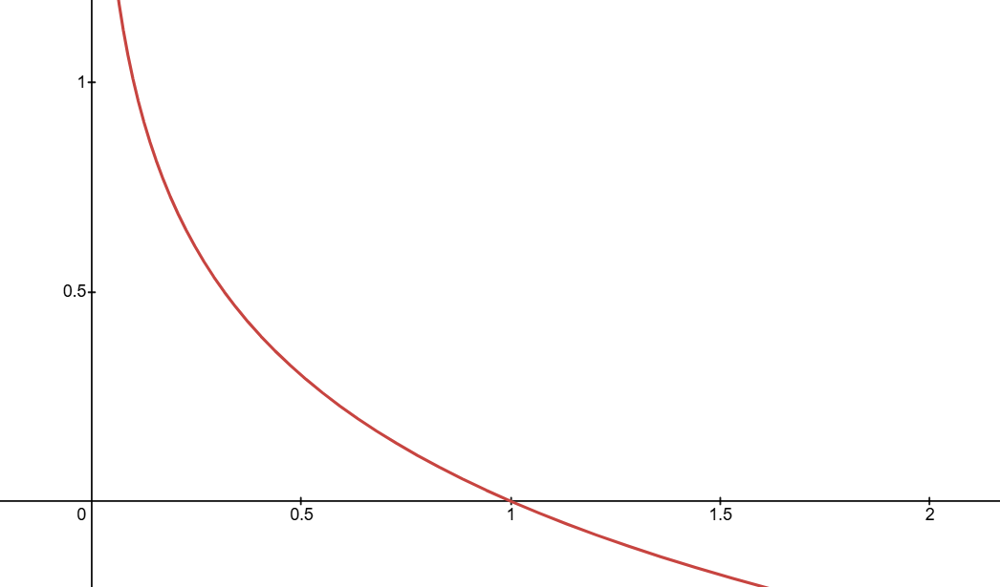
- \(p_i\) 是第 \(i\) 个事件发生的概率
- \(X = \{x_1, x_2, \ldots, x_n\}\) 是事件的集合，\(x_i\) 是第 \(i\) 个事件
- \(H(X)\) 是事件 \(X\) 的信息熵，代表该概率分布下，事件 \(X\) 的平均信息量
- \(h(x)\) 是事件 \(x\) 的自信息量，当log底数为2，代表在该概率分布下，至少需要h(x)个比特来表示事件 \(x\)
- \(\log\) 底数为2，单位为比特，底数为e，单位为奈特，底数为10，单位为哈特
2.2.2 交叉熵¶
- \(P(x)\) 是事件 \(x\) 的真实概率分布
- \(Q(x)\) 是事件 \(x\) 的近似概率分布
- \(H(P,Q)\) 是事件 \(X\) 的交叉熵，代表使用Q(x)近似P(x)分布时，事件 \(X\) 的平均信息量
2.2.3 条件熵¶
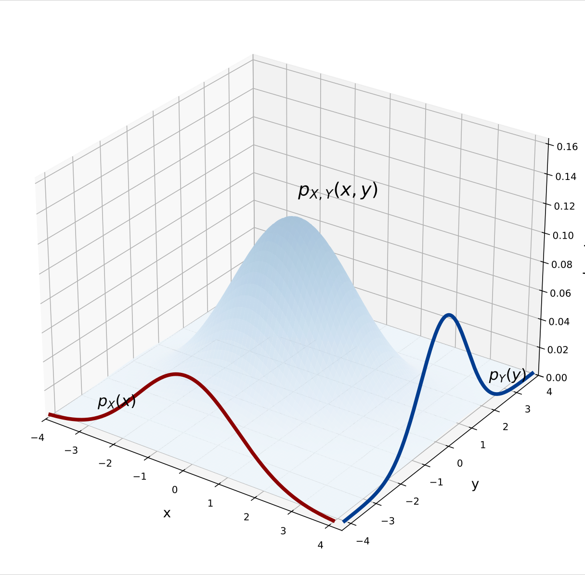
联合概率密度函数，边缘概率密度函数
- \(p_X(x)\) :事件 \(x\) 的边缘概率密度函数
- \(p_Y(y)\) :事件 \(y\) 的边缘概率密度函数
- \(p_{X,Y}(x,y)\) :事件 \(x\) 和 \(y\) 的联合概率密度函数
- \(H(Y|X)\) 是在X已知的条件下，Y的平均信息量，或者说Y的剩余不确定性。
- \(P(x,y)\) 是事件 \(x\) 和 \(y\) 的联合概率分布
- \(H(X,Y)\) 事件x和y的联合熵，事件x和y同时出现时，(x,y)的平均信息量
这里对于独立和相关事件都适用
2.2.4 互信息¶
互信息代表了知道X后，Y的不确定性（信息量）减少了多少
- \(P(x),P(y)\) x和y的边缘概率分布
2.2.5 Renyi熵¶
- \(\alpha < 1\):低概率事件影响放大，关注分布的覆盖范围和尾部
- \(\alpha > 1\):高概率事件影响放大，关注分布的峰值和集中程度
- \(\alpha = 0\):Hartley熵，只关心有多少个非零概率状态
- \(\alpha = 2\):碰撞熵\(H_2(X)\)，平均碰撞信息量（两次独立采样结果相同的平均信息量）
- \(\alpha \to \infty\):最小熵，只关注概率最大的事件的信息量
2.3 KL散度¶
KL散度（Kullback-Leibler散度）代表使用Q分布近似P分布带来的额外平均信息量
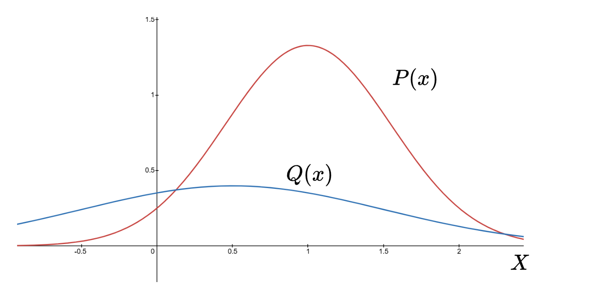
值得注意的是
2.4 JS散度¶
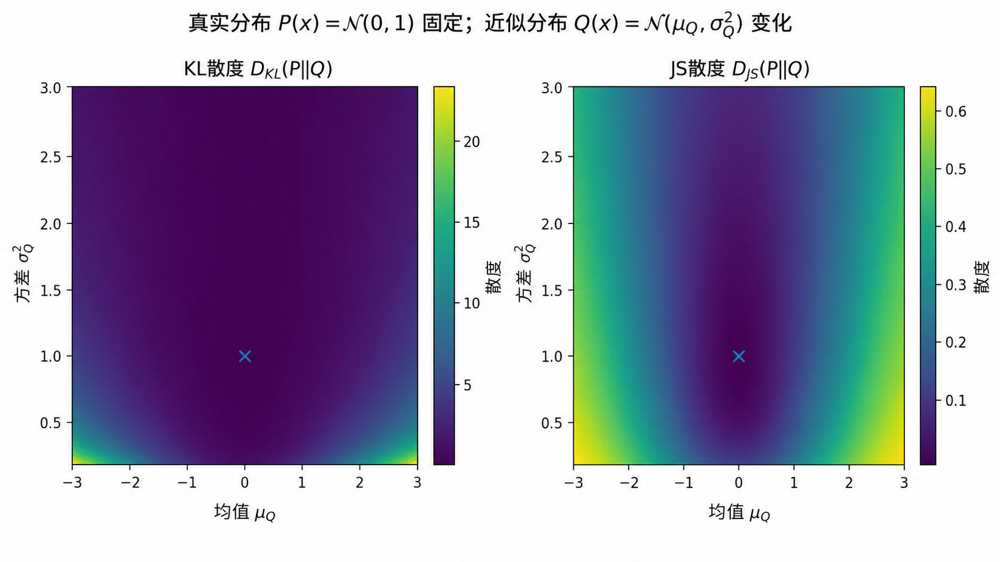
JS散度（Jensen-Shannon散度）代表使用P和Q分布之间的相似程度
- 对称性：P和Q分布平等时可以稳定表示两个分布的差异，不会受到计算顺序的干扰
- 非负性：JS散度总大于等于0，且仅当P和Q分布相同时，JS散度为为0
- 有界性：JS散度计算过程中分母M(x)只有P(X)和Q(X)都为0的时候才会为0，不会出现 \(\infty\)
- \(0 \leq D_{JS}(P||Q) \leq \log 2\) ，JS散度梯度较小
2.5 线性回归与正则化¶
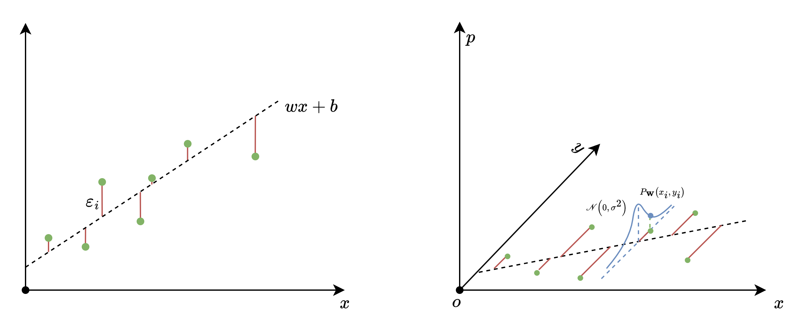
这是一个线性回归的例子，线性回归是拟合样本的分布趋势。换一个角度说，线性回归是寻找一组 \(\{w_1, w_2, ..., w_n\}\) (已知w后，可以根据 \(\hat{x},\hat{y}\) 直接计算b )使得在噪声项 \(\epsilon\) 符合特定分布（通常是高斯分布）下，样本出现的概率最大。
- \(\epsilon\): 假设样本值与特征x呈现线性关系的情况下，由于各种其他原因，样本值与理想线性关系 \(y_{real} = wx+b\) 之间存在噪声误差。一般将噪声误差分布假设为高斯分布。
- \(P_{\mathbf{w}}(\mathcal{X})\):在参数 \(\mathbf{w}\) 下，样本集 \(\mathcal{X}\) 出现的概率
- \(\epsilon_i\): 第 \(i\) 个样本 \(y_i\) 与理想线性关系 \(y_{ideal} = wx+b\) 之间存在噪声误差
已知权重分布的先验，需要求得的就是参数和样本的联合概率最大的情况
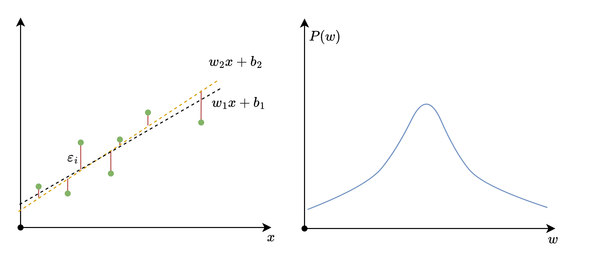
有时可能出现多种结果的MSE最小且相同，此时可以根据w的先验分布选择联合最优结果
这里假设权重具有相同的先验尺度
权重按照高斯分布
- \(\lambda\) : 正则化系数，\(\lambda = \frac{\sigma^2}{\tau^2}\)
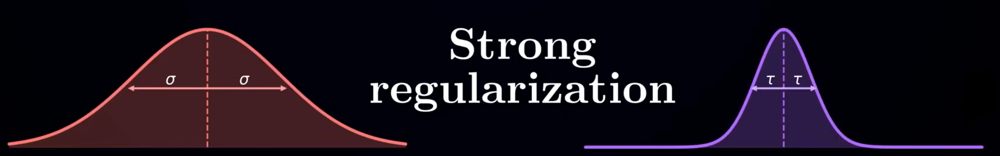
权重先验更强时，\(\lambda\) 会越大，正则化影响越强
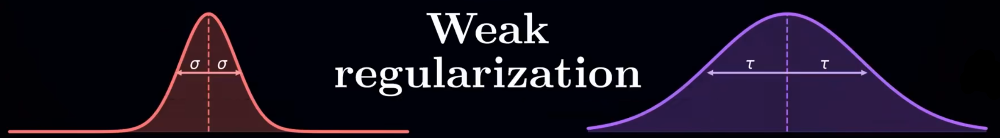
数据非常可靠且方差很小时，\(\lambda\) 减小，侧重拟合数据
权重按照拉普拉斯分布
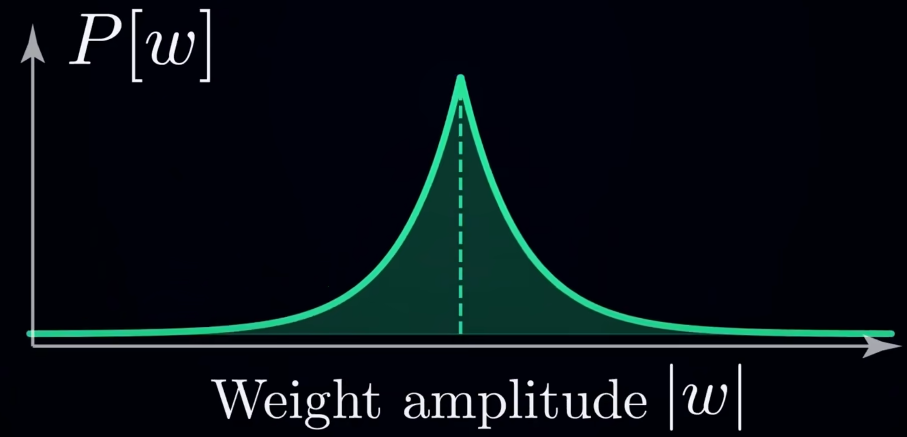
拉普拉斯分布
权重分布含义
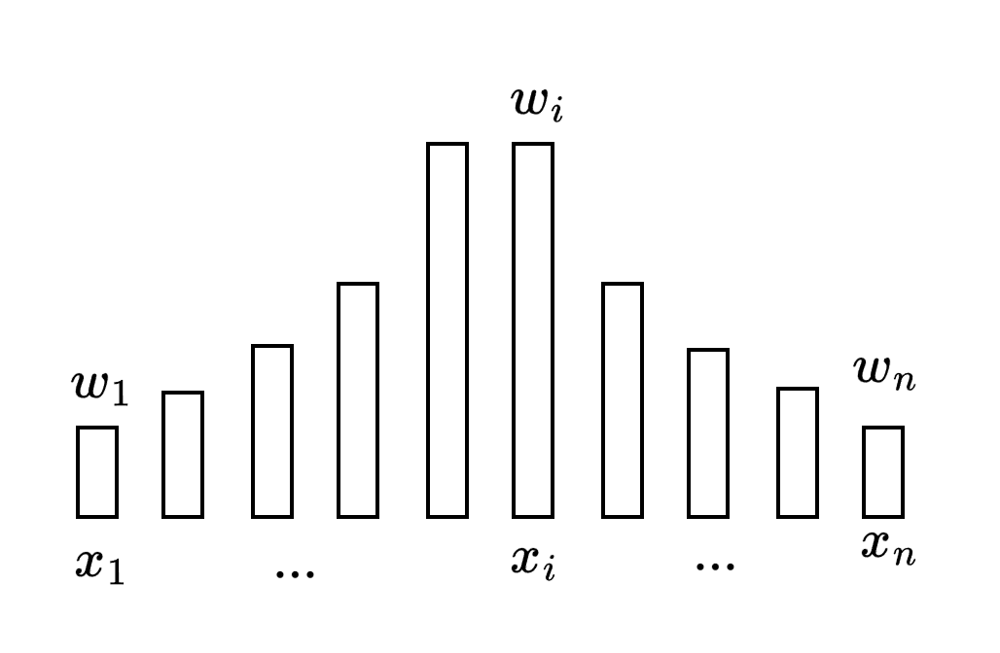
输入特征：\(\{x_1, x_2, ..., x_n\}\)
特征权重：\(\{w_1, w_2, ..., w_n\}\)
一般都会对输入进行标准化处理，使其分布在相近尺度下。输入特征相互独立。 - 每个特征权重都对应一个输入特征对结果的影响力，如果输入特征数足够多，其影响力分布就会趋近于高斯分布 - 如果只有部分输入特征对结果有影响，就使用拉普拉斯分布。
函数拟合
线性回归是函数拟合的一种特殊形式，函数拟合可以看作最大化 \(P(\mathcal{X}, \mathbf{\theta})\)， \(\theta\) 是神经网络参数。
概率分布近似于函数拟合的区别仍待探究
3. 神经网络¶
3.1 通用逼近定理¶
对定义在紧致区域上的任意连续函数 f(x)，以及任意小的误差 ε>0，只要隐藏层神经元足够多，就存在一组网络参数，使得 \(\hat{f}(x) \approx f(x)\)，误差小于 ε。
通用逼近定理多隐藏层推广：
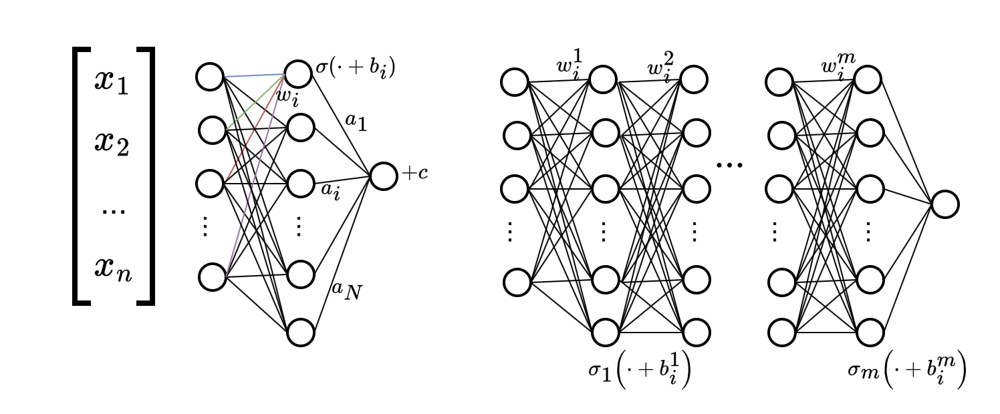
需要注意的是，N和n不同。
理论上，单隐藏层神经网络理论上可以逼近到任意精度
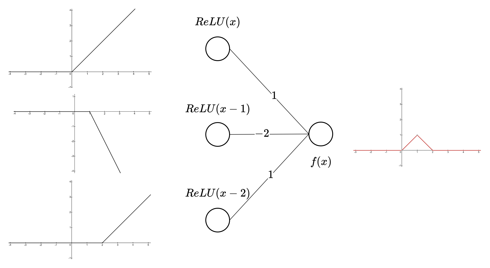
使用ReLU激活函数拟合f(x)示例
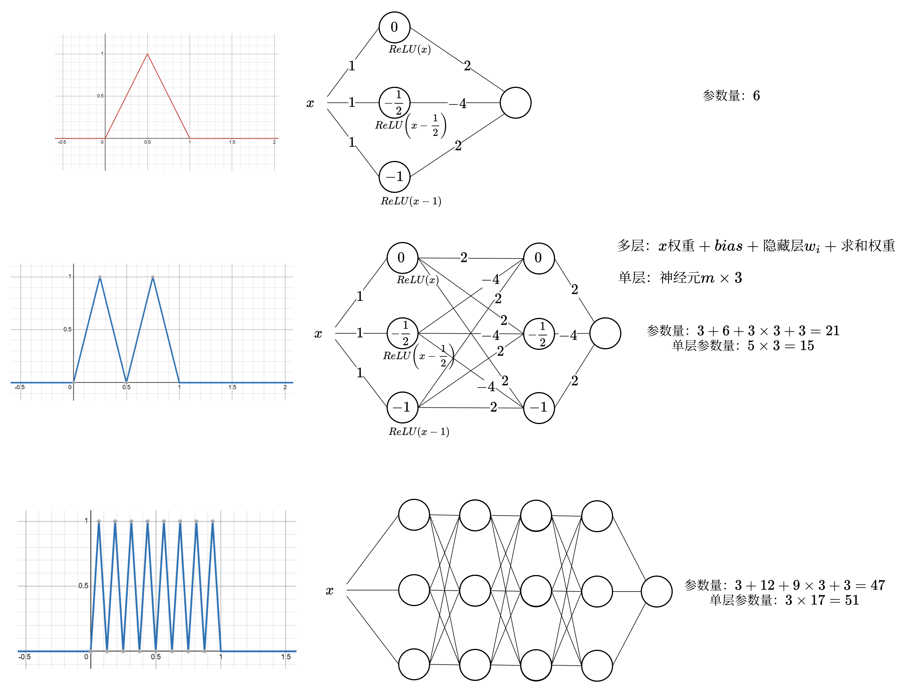
单层使用ReLU的神经网络理论上每一折都需要一个神经元，多层神经元随着函数变得复杂，使用的神经元数量会慢慢远小于单层神经元。每个神经元都会对应三个参数 \(w_i, b_i, a_i\) 。
每复合一次，线性区间（图上的尖峰左右两侧各对应一个线性区间）会翻倍，m层就有 \(2^m\) 个线性区间。而单层神经网络一个线性区间就对应一个神经元。
g(x) 和 g(x,0,0,...,0)之间有区别吗
似乎有很大的区别。
3.2 神经元死亡¶
神经元对所有输入数据的输出都为0
例如：输入数据 \(x\in [-1,1]\)
对所有的输入数据，该神经元 \(w_1, b_1\) 都无法更新，则称该神经元死亡。如果一整层的神经元都死亡，则整个网络都会冻结。
即使不使用dropout，神经元也可能死亡，而且在业界也造成了不少问题
3.3 频谱偏移¶
\(f(x)\) 为目标函数，\(g(x;\theta)\) 为模型函数， \(\theta\) 为模型参数。
总结就是，对模型中的参数w, 目标函数f(x)中低频的部分参与度更高，假如 \(\sin(\pi x)\) 部分对w的梯度值贡献为\(C\) 的话，那 \(\sin(100\pi x)\) 部分对w的梯度值贡献为 \(\frac{C}{100}\) ，低频的变化能影响w的值。
3.4 位置编码¶
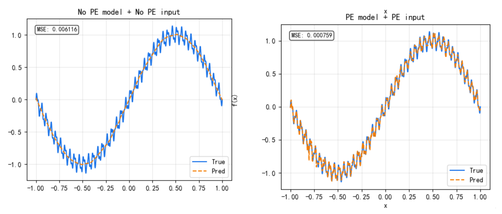
位置编码确实能让不同频率的变化快速被拟合，原理未知，推测需要目标函数的频域分布要和输入的位置编码频率相似才行。
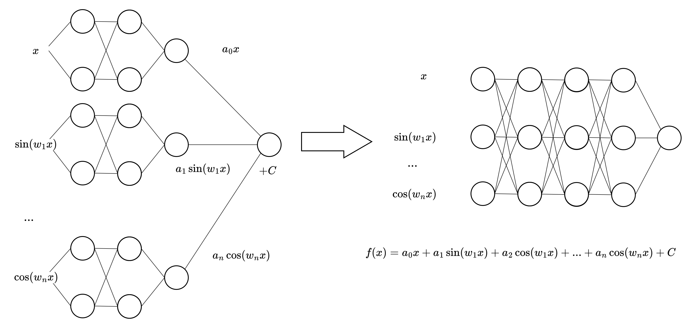
猜想：多输入的神经网络可以看作多个独立的神经网络加权之和。它们合并时子神经网络之间的连接负责在计算时实现子网络的相关连接，如图：f(x)有多个正交基函数加权相加，使用不同的子网络并行训练拟合基函数，但是y只有一个，所以不同子网络需要相互配合，因此可以合并成一个大网络，让神经网络自己学习如何相互配合。
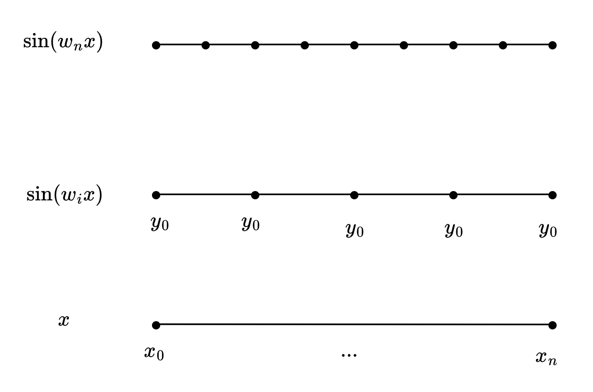
不难发现，每轮输入的x只会出现一次，但 \(y_i = sin(wx)\) 会反复出现，出现次数刚好是 \(\frac{w_i(b-a)}{2\pi}\) 。这就相当于 一轮 \(w_i\) 对应的频率训练 \(\frac{w_i(b-a)}{2\pi}\) 轮。也增加了高频信息拟合的速度。
那么可以推定，除了傅里叶基函数，其他连续可微基函数也可以作为位置编码。
傅里叶基（正弦波）是“平坦直线空间”的拉普拉斯算子特征解；球谐函数是“球面空间”的拉普拉斯算子特征解；任何你想要的“位置编码”基函数，本质上都应该是“该输入空间所在流形”的拉普拉斯算子特征解。